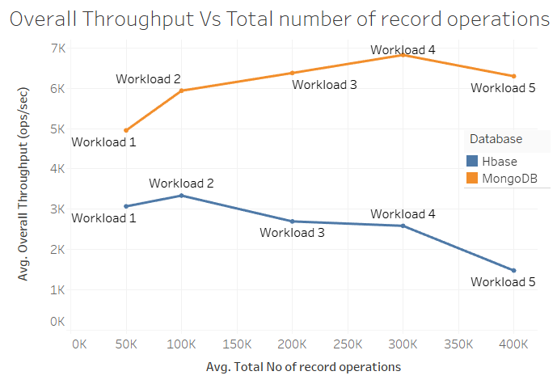

Agreement intelligence platforms
Led backend delivery for AJE CX general availability, including filter-based jobs, plan limit enforcement, reliability improvements, telemetry, documentation, and engineering/product coordination.
Senior Software Engineer | Distributed Systems | DocuSign | Dublin
I work across distributed job processing, secure document automation, Kubernetes-deployed services, Kafka integrations, production readiness, and backend reliability. My strongest work turns ambiguous platform problems into durable systems, measurable operational improvements, and clear delivery paths for engineering teams.
My work focuses on backend systems that carry sensitive enterprise workflows: document automation, agreement intelligence, PCI and PII data, distributed processing, and production platforms where reliability is part of the product.
Led backend delivery for AJE CX general availability, including filter-based jobs, plan limit enforcement, reliability improvements, telemetry, documentation, and engineering/product coordination.
Owned AI reprocessing from exploration through GA and scale-up as DRI, while reducing team on-call noise by 70% through alert tuning, telemetry, and recurring incident work.
Built PCI and PII-aware Consumer Data Management capabilities at Mastercard using Java, Spring Boot, MongoDB, microservices, PCF, CI/CD, and production-grade testing.
The progression is consistent: take ownership of difficult backend systems, simplify the architecture, improve operational quality, and help teams deliver through ambiguity.
Lead backend platform work across AJE CX, AI reprocessing, UC, DCF, and agreement intelligence systems. Own distributed job processing, scanner/processor/API work, production readiness, architecture review, testing strategy, and operational reliability.
Worked in the finance domain on an internal Consumer Data Management product handling PCI and PII data with Java, Spring Boot, MongoDB, microservices architecture, Pivotal Cloud Foundry deployment, CI/CD, and enterprise-grade testing.
Supported lab sessions for Masters, postgraduate, and Higher Diploma courses including Advanced Data Mining, Data Visualization, Programming for Data Analytics, Data and Web Mining, and Data Storage & Management.
Built full-stack enterprise applications across banking, investment banking, retail, and HR domains at Neebal Technologies, Intelliswift, and Larsen & Toubro Infotech. Led early project delivery, implemented application security practices, and developed Java/J2EE systems from scratch.
This combines current backend/platform accomplishments with public project artifacts. The result is a portfolio that shows both production ownership and inspectable technical work.
Delivered filter-based jobs, plan limit enforcement, backend reliability improvements, telemetry, documentation, and cross-functional release coordination.
Drove processor logic, ShardId handling, DB disaster recovery, deployments, production readiness, and reprocessing operations as DRI.
Built fallback behavior that enabled rapid rollback and demo customer unblocking when gating limitations affected existing accounts.
Worked on background workers, Kafka integration, dynamic rate limiting, job TTL, APR integrations, DMS sync, Azure services, and Databricks-backed extraction pipelines.

Combined URL, JavaScript, and HTML-content features with SVM, Random Forest, and weighted ensemble modeling. The best model achieved 95% precision, 95% recall, and 94% F1-score.
Read case study
Demonstrated cloud analytics using stock market data, big data processing, architecture diagrams, and visualization practices.
Read case study
Compared NoSQL databases on OpenStack instances using throughput and latency measurements for data storage and management coursework.
Read case study
Built a CRM solution from a field-force case study, turning business requirements into dashboard-led operational workflows.
Read case studyThe stack supports the work: distributed backend services, sensitive data workflows, production observability, performance testing, cloud pipelines, and data-informed architecture.
Java, Spring Boot, Spring MVC, Hibernate, JPA, Micronaut, REST APIs, microservices, multithreading, design patterns.
Document automation, agreement intelligence, e-signature workflows, payment systems, banking applications, PCF, Kubernetes-deployed services.
Python, R, machine learning, data mining, BI, Tableau, Azure Databricks, MongoDB, Kafka, NoSQL, big data analytics.
PCI and PII-aware systems, application security implementation, secure data handling, PR reviews, integration testing, performance testing.
HLD/LLD, technical design documents, Agile Scrum, sprint planning, production readiness, incident management, stakeholder clarity.
AI platform foundations, large-scale inference systems, document intelligence, reliability patterns, modern engineering leadership.
Operating Model
I work best when the problem is messy: unclear boundaries, sensitive data, production pressure, multiple stakeholders, and a need to turn system design into shipped software.
Proof
These recommendations come from earlier collaborators and are presented as proof of execution style: proactive ownership, technical depth, mentoring, and debugging ability.
"A proactive and tireless contributor who would make a great addition to any team."
"A great mentor for someone looking to learn any technology in the development stack."
"Determination to complete the project on time and with perfection."
I want to write the kind of notes I wish I had while building production systems: specific, experience-backed, and useful to engineers making architecture decisions.
Review Mode
The page is still hidden from search while the story is being refined. Once the content feels accurate, it can replace the current homepage and become the main vdharam.com experience.